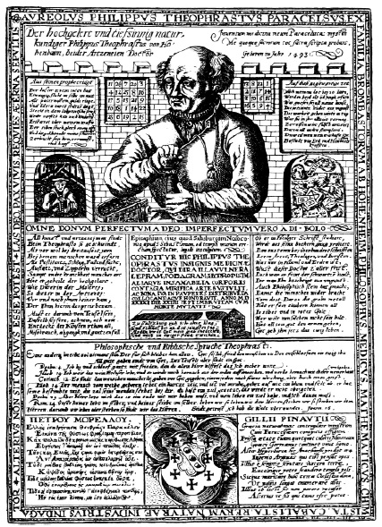

ŞEKİL 26. Ünlü hekim ve simyacı Paracelsus’un tıbbî-simyasal yönergelerinin yer aldığı, Balthasar Jenichen tarafından hazırlanmış bir el ilânı (yukarıda sihirli kareler yer almaktadır) (1565 öncesi).53
Paracelsus tıbbı, hem simya karşıtı hem de Galenos ve Arap tıbbı karşıtı idi. Paracelsus eski bilgilere kuşkuyla yaklaşırken yeni bilgileri araştırmıştır. Olduğu gibi kullanılan bitkilerin yanı sıra özsuyunu ya da tentürünü (alkol içindeki çözeltisini) çıkararak kullandığı, merhem ya da yakısını hazırladığı bitkiler de vardır. Paracelsus’a göre bir bitkinin sıcaklık ya da soğukluk, kuruluk ya da nemlilik nitelikleri, Galenos’un öğrettiğinin tersine, onun terapötik (sağaltıcı) yararını sağlamaz; aksine her bir aracın sahip olduğu “erdem” ya da günümüz deyişiyle sağaltıcı nitelik, onu tedavi açısından yararlı kılar. Ona göre bitkilerde dört ilksel elementin dışında, Tanrı’nın iradesiyle türeyen ve “quinta essentia” diye adlandırılan bir beşinci öz de bulunmaktadır ve bitkisel ilaç hazırlamada damıtma ve arıtma gibi kimyasal yöntemler uygulayarak bitkinin bu etkin bileşeni (“yaşam gücü”), onun posasından çekip alınarak kullanılmalıdır. Bu bağlamda Paracelsus ve yandaşları bitkilerin etkili kısımlarını, “ruhunu” özütleyip ayrı olarak ele geçirmeye çalışmışlardır ve bu nedenle Paracelsus, gerçek farmasötik kimyanın kurucusu sayılmaktadır.2
Paracelsus, günümüzde “Geriatricum” olarak adlandırılabilecek şekilde “uzun ömür bahşedecek bir eliksir” hazırlamaya da çalışmıştır. Zehirli maddelerin uygun ve düşük dozlarda ilaç olarak kullanılabileceğini de savunan Paracelsus, bu bağlamda zehirli olduğunu bildiği çöpleme (“Helleborus niger” / “Christrose”) bitkisini kullanmış ve bu konuda şunları yazmıştır: “Çöplemeden 6 daneden fazlasını kullanmayın”. Ona göre “Tüm maddeler birer zehirdir, zehirli olmayan madde yoktur. Onu zehirsiz kılan şey, yalnızca düşük dozudur” [“Dosis facit venemum“: “Zehiri, miktar doğurur!”].
Paracelsus, yöntem olarak başkalarına uygulamayı düşündüğü tedavi işlemlerini kendi üzerinde de denemiştir. Paracelsus’a göre beden, hekimlik biliminin gerçeklerinin sınandığı bir laboratuvardır. Paracelsus’un kullandığı ilaçlardan kimileri şunlardı:
→ “Castoreum“ (Alm. “Bibergeil”) [kastoryum, kunduz hayası yağı / kunduz taşağı yağı]: Paracelsus’un örneğin sara hastalığına karşı kullandığı ilaçlardan biri bu idi.
→ “Lapis lyncis / Lyncurion / Dactylus idaeus / Lapis belemnites” (Alm. “Luchsstein”: “vaşak taşı”): Jura ve tebeşir çağında yaşamış sepya türü mürekkepbalığının fosil kalıntılarından ibarettir. Kireçtaşı içerikli olup o dönemlerde ecza maddesi olarak satılırdı.
→ “Lapis Judaicus” (“Yahudi taşı”) / “Lapis syriacus“ (Türk. “Beni İsrail zeytini“, Ar., “hacer el-Yehud / hacer el-zeytun“): Bir deniz kestanesi ya da deniz kirpisi türünün fosil kalıntısı olup kalsiyum karbonat bileşimlidir.
→ “Lapis spongiae” (“süngertaşı”) (Alm. “Nierenstein”: “böbrektaşı”): 10. yüzyılda hekim Serapion (Yuhanna ibn Sarâbiyûn) (870-939), 13. yüzyılda ise Abdullah ibn el-Baytar (“Albeithar“) (1197-1248) tarafından taş düşürücü özellikte olduğu belirtilmiştir. İnce toz halinde kullanılırdı.
→ “Oculi cancrorum / Lapis cancrorum” (Alm. “Krebsaugen / Krebsstein”) (“yengeç gözü” / “yengeç taşı”): Yengecin her yıl yenilediği kabuğundan hazırlanan ya da tatlısu yengecinin (“Astacus fluviatilis Fabr.”) midesinde çökelmiş, kalsiyum karbonat-kalsiyum fosfat-magnezyum fosfat bileşimli mercimek biçimli beyaz cisimcik şeklinde elde edilen ve idrar kesesi taşlarına ve kolik’e (müzmin karın ağrısı) karşı kullanılan eski tür bir ilaç.
→ “Semen saxifragae”: “Taşkıran” olarak adlandırılır ve taş düşürme ilacı olarak kullanılırdı. Paracelsus şarap fıçılarında şaraptaşı oluşumuna benzer şekilde insan bedeninin çeşitli organlarında taş oluşumundan söz etmiş, bu tür metabolizma hastalıklarına “tartar hastalıkları” adını vermişti.
→ “Lavandula angustifolia / Lavandula spica / Lavandula vera“ (lavanta bitkisi): Paracelsus’a göre gut hastalığına karşı en iyi ilaçtır ve ayda bir kez kullanılmalıdır. Zengin eterik yağ içerdiğinden gerilim (stres) giderici ve dinlendirici ilaç karışımlarında yer almıştır. Güzel koku, ruha hitap ettiği için tarih boyunca önemli rol oynamış ve büyü ve sihirde, dinsel törenlerde yer almıştır. Cinlerin varlığına inanma ve çeşitli hastalıkların nedenlerinin bilinmezliği durumlarında yeğin kokulu bitki ve tütsülerin, hastalık yapıcı kötü ruh ve cinleri defettiğine inanılırdı. Veba salgınlarında hekimler, burunlarını kapatan ve içi aromatik baharatla dolu olan gaga şeklinde maskeler kullanırlardı. Eterik yağların bakterilere karşı anti-mikrobiyel etkileri bilinmektedir. Paracelsus’a göre “Quintessenz” (beşinci öz), altın yapıcılığa ilişkin bir madde değil, çoğu zaman damıtma yöntemiyle iksirlerin üretimine yönelikti. Günümüzde bu bağlamlı uğraş, “aromaterapi” diye adlandırılmaktadır. Paracelsus gut hastalığına karşı kadınların, özelde ise genç kızların âdet kanının kullanılmasını da önermiş, saranın da insan kalıntılarıyla tedavi edilebileceğini düşünmüştür.
→ “Melissa officinalis“ (“bal yapan ot”, oğulotu, melisa): Kalp ve damar hastalıklarının şifalı bitkilerinden olup bilinen en eski şifalı bitkilerden biridir. Charlemagne’ın emirnamelerinde her manastırda bundan yetiştirilmesi buyruğu da yer almaktadır. Paracelsus tarafından nevralji, baş ağrısı, migren, uykusuzluk gibi rahatsızlıklara karşı yatmadan önce kullanılması önerilmiştir.
→ “Hypericum perforatum“ (kılıçotu) (Alm. “Johanniskraut”): Bedensel ağrılarda ve ruhsal rahatsızlıklarda kullanılırdı.
Hekim ve simyacı Oswald Croll (1560-1609), Tanrı tarafından yaratılmış her şeyin, sonuçta yetkin olduğundan yola çıkarak simyasal ilaçlar hazırlamayı hedeflemiştir. Evren’in “ay-altı bölgesinde” tüm nesneler iyi ve kötü, yetkin ve yetkin olmayan şeklinde ikili bir doğada bulunmaktadır. “Beşinci öz”, onların posasından, karışımlarından, laboratuvardaki ateş (fırın) yardımıyla ayrılmalıdır. Bu durum hem bitkiler hem de mineraller, yani kimyasal maddeler için geçerliydi. Kimyagerler “En Yüce Madde”yi, ateş aracılığıyla özgürlüğüne kavuştururdu.2
Tedavi etkisinin taşıyıcıları bitki, hayvan ve minerallerin ölü bedenleri değil de onların ruhları (“spiritus”) ve onların alkol ya da eter gibi çözücülerde çözülerek hazırlanan tentürleri (“tinctura”) idi. Simya, söz konusu olan doğal kaynaklardan en etkin maddeyi elde etmeyi denemiştir. Kusturma işlemi (“vomitoria”), önceleri boğaza kuştüyü sokulup gıcık verilerek gerçekleştirilirken simyacılar mineral kimyasına dayalı olarak simyasal ilaç hazırlama çabaları sırasında “vomitiva” (kusturucu) olarak bakır sülfat ve çinko sülfatı, “cathartica” (müshil) olarak da kalomeli [tatlı süblime, tatlı sülimen, civa(I)klorür, Hg2Cl2] bulmuşlardır. Kalomel, daha 13. yüzyılda “Mercurius praecipitatus” adı altında ünlü Katalan mistik Raimundus Lullus (1232-1316) tarafından betimlenmiş ve zehirli olmasına karşın simyacılar tarafından su sökücü, bağırsak boşaltıcı ve kusma önleyici bir madde olarak, geç dönemde ise Avusturya İmparatoriçesi Maria Theresia’nın (1717-1780) saray hekimi Gerard van Swieten tarafından frengi tedavisinde dâhilî olarak kullanılmıştır. Nispeten düşük oranda zehirli olan kalomel ve 1920’lerden itibaren “Navasurolâ” ve “Salyrganâ” gibi organik civa bileşikleri, yakın zamanlara dek idrar söktürücü olarak kullanılmışlardır. Terletici ilaç (“diaphoretica”) olarak öncelikle antimon bileşikleri kullanılmıştır. İlk sırada da Oswald Croll tarafından terletici antimon (“Antimonium diaphoreticum”) diye adlandırılan ve antimonun güherçile ile güçlü etkileştirilmesi yoluyla kazanılan oksitlenmiş haldeki beyaz antimonit [antimonik asitin potasyum tuzu (KSbO3)] yer alır. “Tinctura ferri aceti” (asetik asitli demir tentürü), baş ve sinir ağrılarında kullanılmıştır. Altın metali Güneş’e, Güneş ise kalbe karşılık geldiğinden altın, kalbi güçlendirici olarak kullanılırken, gümüş de beyni güçlendirici bir araç olmuştur. Altın, sinirsel hastalıkların, özellikle de krampların ve “kutsal hastalık” (“morbus sacer”) diye bilinen saranın tedavisinde kullanılan preparatlarda yer almıştır. Enfeksiyon hastalıklarıyla mücadelede 16./17. yüzyıldan beri kullanılmakta olan iki özgül ecza, frengiye karşı civa (ŞEKİL 27) ve sıtmaya (“malaria”) karşı da kınakına kabuğu idi.2